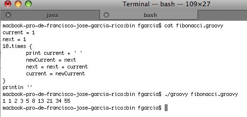

Framework Grails
Sesión 1: Introducción a Groovy
Índice
- ¿Qué es Groovy?
- Instalación
- Hola Mundo
- Características
- Tipos de datos en Groovy
- Colecciones
¿Qué es Groovy?
Groovy es un lenguaje de programación ágil y dinámico diseñado para la Plataforma Java con determinadas características inspiradas en lenguajes como Python, Ruby o Smalltalk, poniéndolas a disposición de los programadores Java mediante una sintaxis típica de Java.
¿Qué es Groovy?
- Integración sin problemas con Java
- No es sólo un lenguaje script, aunque es muy bueno como tal
- Puede ser precompilado a bytecode
- Se integra perfectamente en aplicaciones Java
- Java a tu disposición
- No es Java sin punto y comas
Integración con Java
- Integración imperceptible
- Groovy añade una nueva forma de crear clases en Java
- Groovy es Java con un archivo jar como dependencia
- Cualquier programador Java entenderá Groovy
¿A quién va dirigido?
- Programadores Java
- Programadores de scripts
- Programadores ágiles y extremos
Dirigido a programadores Java
public class ListFiles {
public static void main(String[] args){
new java.io.File(".").eachFileRecurse(
new FileListener() {
public void onFile (File file) {
System.out.println(file.toString());
}
}
);
}
}
Dirigido a programadores Java
groovy -e "new File('.').eachFileRecurse { println it}"
Dirigido a programadores de scripts
- Programadores Perl, Ruby, Python y PHP
- Necesitan la robustez de la Plataforma Java
- Pero sin tanta verborrea
- Métodos ultracomprimidos
- Groovy al rescate
Dirigido a programadores ágiles y extremos
- Perfecto para implementar teorías ágiles
- Sprints cortos
- Sin tiempo apenas para nuevas tecnologías o lenguajes
- Integración continua
- TDD (Test Driven Development)
Instalación
- Descargando el zip desde la web de Groovy
- Utilizando un gestor de paquetes como gvm
Instalación con gvm
curl -s get.gvmtool.net | bash
gvm list groovy
gvm install groovy 2.4.0
Instalación con gvm
Podríamos cambiar la instalación con:
gvm use groovy 1.8.0
Hola Mundo
Tenemos 3 formas de ejecutar código Groovy
- groovysh
- groovyConsole
- groovy
groovysh
Permite ejecutar en línea de comandos código Groovy de forma interactiva. Más información en http://groovy.codehaus.org/Groovy+Shell.
groovysh
groovy:000> "Hola Mundo!"groovy:000> saludo = "Hola" ===> Hola groovy:000> "${saludo} Mundo!" ===> Hola Mundo!
groovysh
groovy:000> def hola(nombre){
groovy:001> println "Hola $nombre"
groovy:002> }
===> true
groovy:000> hola("Fran")
Hola Fran
==== > null
groovyConsole
Interfaz Swing que actua como intérprete de comandos Groovy. Permite guardar y cargar archivos. Más información en http://groovy.codehaus.org/Groovy+Console.
groovyConsole

groovy
- Permite ejecutar scripts directamente en línea de comandos
- Sin precompilar
- Modo directo
groovy

groovyc
- Permite compilar nuestros scripts
- Modo precompilado
- Ejecutar con java
java -cp $GROOVY_HOME/embeddable/groovy-all-2.4.0.jar:classes fibonacci
Características
- Comentarios
- Comparando la sintaxis de Java y Groovy
- Brevedad del lenguaje
- Aserciones
Comentarios
- //: comentarios de una línea
- /*...*/: comentarios multilínea
- /**...*/: comentarios del estilo Groovydoc
- #!: comentarios de primera línea estilo shebang
Comparando la sintaxis de Java y Groovy
Aspectos comunes:
- Mecanismo de paquetes
- Sentencias
- Definición de clases y métodos
- Estructuras de control
- Operadores, asignaciones y expresiones
- Manejo de excepciones
- Declaración de literales
- Instanciación de objetos y llamadas a métodos
Comparando la sintaxis de Java y Groovy
Groovy añade valor a:
- Fácil acceso a los objetos Java a través de nuevas expresiones y operadores
- Nuevas formas de declarar objetos
- Nuevas estructuras de control
- Nuevos tipos de datos con sus correspondientes operadores y expresiones
- Todo se gestiona como un objeto
Brevedad del lenguaje
- ; no obligatorios
- Paréntesis no obligatorios
- Importa automáticamente varios paquetes
- groovy.lang.*
- groovy.util.*
- java.lang.*
- java.util.*
- java.net.*
- java.io.*
- java.Math.BigInteger
- java.Math.BigDecimal
Aserciones
assert(true)
assert 1 == 1
def x = 1
assert x == 1
def y = 1; assert y == 1
assert 1==2 : "Desde cuando 1 es igual a 2"
//Obteniendo el siguiente mensaje
//Exception thrown: Desde cuando 1 es igual a 2. Expression: (1 == 2)
Aserciones
assert new File('foo.bar') == new File('example.txt')
Exception thrown
Assertion failed:
assert new File('foo.bar') == new File('example.txt')
| | |
foo.bar | example.txt
false
Un primer vistazo al código en Groovy
- Declaración de clases
- Scripts en Groovy
- GroovyBeans
- Todo son objetos
- Operador ==
- La verdad en Groovy
- Estructuras de control en Groovy
Declaración de clases
class Libro {
private String titulo
Libro (String elTitulo){
titulo = elTitulo
}
String getTitulo(){
return titulo
}
}
Declaración de clases
Libro cgg = new Libro('Curso GroovyGrails')
assert cgg.getTitulo() == 'Curso GroovyGrails'
assert getTituloAlReves(cgg) == 'sliarGyvoorG osruC'
String getTituloAlReves(libro) {
titulo = libro.getTitulo()
return titulo.reverse()
}
GroovyBeans
class Libro{
String titulo;
String getTitulo(){
return this.titulo
}
void setTitulo(String str){
this.titulo = new String(str)
}
}
GroovyBeans
- Getters y setters implícitamente definidos
- Propiedad sin modificador: privada y getter y setter públicos
- Propiedad final: privada y getter público
- Propiedad privada: debemos declarar su getter y setter de forma privada
Todo son objetos
def x = 1
def y = 2
assert x + y == 3
assert x.plus(y) == 3
assert x instanceof Integer
double d = 10.23
assert d instanceof Double
char a = 'a'
assert a instanceof Character
Operador ==
- En Java
- En primitivas, igualdad
- En objetos, identicas
- En Groovy, método equals
- Método is para comprobar objetos idénticos
if (foo.is(bar))
println "foo y bar son el mismo objeto"
La verdad en Groovy
def a = true
def b = true
def c = false
assert a
assert a && b
assert a || c
assert !c
La verdad en Groovy
def numeros = [1,2,3]
assert numeros //cierto, ya que numeros no está vacía
numeros = [] //vacíamos la lista
assert !numeros //cierto, ya que ahora la lista está vacía
assert ['one':1] //este mapa contiene un elemento con lo que se evalúa a cierto
assert ![:] //este mapa está vacío
La verdad en Groovy
assert 'Esto es cierto'
assert !''
//GStrings
def s = ''
assert !("$s")
s = 'x'
assert ("$s")
La verdad en Groovy
assert !0
assert 1
La verdad en Groovy
assert new Object()
assert !null
Estructuras de control
- if-else
- while
- switch
- try-catch-finally
if anidados
if ( ... ) {
...
} else if (...) {
...
} else {
...
}
Operador ternario
def y = 5
def x = (y > 1) ? "funciona" : "falla"
assert x == "funciona"
Operador Elvis
def usuario = [nombre:"Fran"]
def nombre = usuario.nombre ?: "Anónimo"
assert nombre == "Fran"
usuario = [:]
nombre = usuario.nombre ?: "Anónimo"
assert nombre == "Anónimo"
Estructura switch
def x = 1.23
def result = ""
switch ( x ) {
case "foo":
result = "found foo"
// lets fall through
case "bar":
result += "bar"
case [4, 5, 6, 'inList']:
result = "list"
break
case 12..30:
result = "range"
break
case Integer:
result = "integer"
break
case Number:
result = "number"
break
default:
result = "default"
}
assert result == "number"
Estructura switch
- Comparar la clase de una variable
- Expresiones regulares
- Comprobar si la variable está contenida en una colección
- Igualdad de variable y el caso particular
Estructura for
Utiliza la anotación for (i in x) { cuerpo } donde x puede ser cualquier cosa que se puede iterar.
for(i in 1..10)
println i
for(i in [1,2,3,4,5,6,7,8,9,10])
println i
Closures como bucles
def alumnos = ['Pedro','Miguel','Alejandro','Elena']
alumnos.each{nombre -> println nombre}
Tipos de datos en Groovy
- Tipos de datos primitivos (int, double, float, char, etc)
- Tipos de datos referencia (Object, String, etc)
ArrayList resultados = new ArrayList();
for (int i=0; i < listaUno.size(); i++){
Integer primero = (Integer)listaUno.get(i);
Integer segundo = (Integer)listaDos.get(i);
int suma = primero.intValue() + segundo.intValue();
resultados.add(new Integer(suma));
}
Tipos de datos en Groovy
- Tipos de datos primitivos (int, double, float, char, etc)
- Tipos de datos referencia (Object, String, etc)
ArrayList resultados = new ArrayList();
for (int i=0; i < listaUno.size(); i++){
resultados.add(primero + segundo)
}
Tipos de datos referencia vs primitivos
| Tipo primitivo | Tipo referencia |
|---|---|
| byte | java.lang.Byte |
| short | java.lang.Short |
| int | java.lang.Integer |
| long | java.lang.Long |
| float | java.lang.Float |
| double | java.lang.Double |
| char | java.lang.Character |
| boolean | java.lang.Boolean |
Boxing, unboxing y autoboxing
- Boxing: conversión de tipo primitivo a tipo referencia
- Unboxing: conversión de tipo referencia a tipo primitivo
- Autoboxing: conversión automática de Groovy
Autoboxing
Sólo se hace autoboxing cuando sea estrictamente necesario
assert 'Hola Mundo'.indexOf(111) == 1
assert 1 + 2 == 3 //1.plus(2)
Tipado dinámico
| Sentencia | Tipo de variable |
|---|---|
| def a = 2 | java.lang.Integer |
| def b = 0.4f | java.lang.Float |
| def c = 'a' | java.lang.String |
| int d = 3 | java.lang.Integer |
| float e = 4 | java.lang.Float |
| char f = '1' | java.lang.Character |
| Integer g = 6 | java.lang.Integer |
| String h = '1' | java.lang.String |
| Character i = 'a' | java.lang.Character |
Tipado dinámico
def a = 2
def b = 0.4f
def c = 'a'
int d = 3
float e = 4
char f = '1'
Integer g = 6
String h = '1'
Character i = 'a'
assert a instanceof java.lang.Integer
assert b instanceof java.lang.Float
assert c instanceof java.lang.String
assert d instanceof java.lang.Integer
assert e instanceof java.lang.Float
assert f instanceof java.lang.Character
assert g instanceof java.lang.Integer
assert h instanceof java.lang.String
assert i instanceof java.lang.Character
Tipado dinámico
- Palabra reservada def
- Tipado dinámico seguro
- Podemos elegir entre dinámico o estático
- Piensa en si es realmente útil definir una variable de forma dinámica
- Duck typing
Trabajo con cadenas
- Librería GString
- Variable en las cadenas
def nombre = "Fran"
assert "hola $nombre" == "hola Fran"
Trabajo con cadenas
Varias formas de crear cadenas de texto
- Comillas simples
- Comillas dobles
- 3 comillas simples
- 3 comillas dobles
- Símbolo /
Trabajo con cadenas
def c1 = 'hola Juan'
def c2 = "hola $nombre"
def c3 = '''-------------
Total:0.02
-------------'''
def c4 = """-------------
Total:$total
-------------"""
def c5 = /x(\d*)y/
La librería GString
nombre = 'Fran'
apellidos = 'García'
salida = "Apellidos, nombre: $apellidos, $nombre"
fecha = new Date(0)
salida = "Año $fecha.year, Mes $fecha.month, Día $fecha.date"
salida = "La fecha es ${fecha.toGMTString()}"
sentenciasql = """
SELECT nombre, apellidos
FROM usuarios
WHERE anyo_nacimiento=$fecha.year
"""
La librería GString
saludo = 'Hola Juan'
assert saludo.startsWith('Hola')
assert saludo.getAt(3) == 'a'
assert saludo[3] == 'a'
assert saludo.indexOf('Juan') == 5
assert saludo.contains('Juan')
assert saludo[5..8] == 'Juan'
assert 'Buenos días' + saludo - 'Hola' == 'Buenos días Juan'
assert saludo.count('a') == 2
assert 'b'.padLeft(3) == ' b'
assert 'b'.padRight(3,'_') == 'b__'
assert 'b'.center(3) == ' b '
assert 'b' * 3 == 'bbb'
Expresiones regulares
- Operador =~: find
- Operador ==~: match
- Operador ~String: pattern
Patrones de texto
- algo de texto, simplemente encontrará la frase "algo de texto"
- algo de\s+texto, encontrará frases que empiecen con "algo de", vayan seguidos por uno o más caracteres y terminen con la palabra texto
- \d\d/\d\d/\d\d\d\d, detectará fechas como por ejemplo 28/06/2008
Patrones de expresiones regulares
| Símbolo | Significado |
|---|---|
| . | Cualquier carácter |
| ^ | El inicio de una línea |
| $ | El final de una línea |
| \d | Un dígito |
| \D | Cualquier cosa excepto un dígito |
| \s | Un espacio en blanco |
| \S | Cualquier cosa excepto un espacio en blanco |
| \w | Un carácter de texto |
| \W | Cualquier carácter excepto los de texto |
| \b | Límite de palabras |
| () | Agrupación |
| (x\|y) | O x o y |
| x* | Cero o más ocurrencias de x |
| x+ | Una o más ocurrencias de x |
| x? | Cero o una ocurrencia de x |
| x{m,n} | Entre m y n ocurrencias de x |
| x{m} | Exactamente m ocurrencias de x |
| [a-d] | Incluye los caracteres a, b, c y d |
| [^a] | Cualquier carácter excepto la letra a |
Uso de expresiones regulares
- Indicarnos si un determinado patrón encaja completamente con un texto
- Si existe alguna ocurrencia de un patrón en una cadena
- Contar el número de ocurrencias
- Hacer algo con una determinada ocurrencia
- Reemplazar todas las ocurrencias con un determinado texto
- Separar una cadena en múltiples cadenas a partir de las ocurrencias que aparezcan en la misma
Ejemplo de expresiones regulares
refran = "tres tristes tigres tigraban en un tigral"
//Compruebo que hay al menos un fragmento de código que empieza por t,
//le siga cualquier caracter y posteriormente haya una g
assert refran =~ /t.g/
//Compruebo que el refrán esté compuesto sólo
//por palabras seguidas de un espacio
assert refran ==~ /(\w+ \w+)*/
//Compruebo que el valor de una operación de tipo match es un booleano
assert (refran ==~ /(\w+ \w+)*/) instanceof java.lang.Boolean
//A diferencia que una operación de tipo find,
//las operaciones match se evalúan por completo contra una cadena
assert (refran ==~ /t.g/) == false
//Sustituyo las palabras por el caracter x
assert (refran.replaceAll(/\w+/,'x')) == 'x x x x x x x'
//Devuelve un array con todas las palabras del refrán
palabras = refran.split(/ /)
assert palabras.size() == 7
assert palabras[2] == 'tigres'
assert palabras.getAt(3) == 'tigraban'
Ejemplo de expresiones regulares
refran = "tres tristes tigres tigraban en un tigral"
//Busco todas las palabras que acaben en 'es'
rima = ~/\b\w*es\b/
resultado = ''
refran.eachMatch(rima) { match ->
resultado += match + ' '
}
assert resultado == 'tres tristes tigres '
//Hago lo mismo con el método each
resultado = ''
(refran =~ rima).each { match ->
resultado += match + ' '
}
assert resultado == 'tres tristes tigres '
//Sustituyo todas las rimas por guiones bajos
assert (refran.replaceAll(rima){ it-'es'+'__'} == 'tr__ trist__ tigr__ tigraban en un tigral')
Números
- times()
- upto()
- downto()
- step()
Ejemplo de closures con números
def cadena = ''
10.times {
cadena += 'g'
}
assert cadena == 'gggggggggg'
cadena = ''
1.upto(5) { numero ->
cadena += numero
}
assert cadena == '12345'
cadena = ''
2.downto(-2) { numero ->
cadena += numero + ' '
}
assert cadena == '2 1 0 -1 -2 '
cadena = ''
0.step(0.5, 0.1) { numero ->
cadena += numero + ' '
}
assert cadena == '0 0.1 0.2 0.3 0.4 '
Colecciones
- Rangos
- Listas
- Mapas
Rangos
//Rangos inclusivos
assert (0..10).contains(5)
assert (0..10).contains(10)
//Rangos medio-exclusivos
assert (0..<10).contains(9)
assert (0..<10).contains(10) == false
//Comprobación de tipos
def a = 0..10
assert a instanceof Range
//Definición explícita
a = new IntRange(0,10)
assert a.contains(4)
//Rangos para fechas
def hoy = new Date()
def ayer = hoy - 1
assert (ayer..hoy).size() == 2
//Rangos para caracteres
assert ('a'..'f').contains('e')
//El bucle for con rangos
def salida = ''
for (elemento in 1..5){
salida += elemento
}
assert salida == '12345'
//El bucle for con rangos inversos
salida = ''
for (elemento in 5..1){
salida += elemento
}
assert salida == '54321'
//Simulación del bucle for con rangos inversos
//y el método each con un closure
salida = ''
(5..<1).each { elemento ->
salida += elemento
}
assert salida == '5432'
Rangos como clasificador de grupos
//Rangos como clasificador de grupos
edad = 31
switch (edad){
case 16..20: interesAplicado = 0.25; break
case 21..50: interesAplicado = 0.30; break
case 51..65: interesAplicado = 0.35; break
}
assert interesAplicado == 0.30
//Rangos para el filtrado de datos
edades = [16,29,34,42,55]
joven = 16..30
assert edades.grep(joven) == [16,29]
Listas
miLista = [1,2,3]
assert miLista.size() == 3
assert miLista[2] == 3
assert miLista instanceof ArrayList
listaVacia = []
assert listaVacia.size() == 0
listaLarga = (0..1000).toList()
assert listaLarga[324] == 324
listaExplicita = new ArrayList()
listaExplicita.addAll(miLista)
assert listaExplicita.size == 3
listaExplicita[2] = 4
assert listaExplicita[2] == 4
listaExplicita = new LinkedList(miLista)
assert listaExplicita.size == 3
listaExplicita[2] = 4
assert listaExplicita[2] == 4
Más ejemplos de Listas
miLista = ['a','b','c','d','e','f']
assert miLista[0..2] == ['a','b','c']//Acceso con Rangos
assert miLista[0,2,4] == ['a','c','e']//Acceso con colección de índices
//Modificar elementos
miLista[0..2] = ['x','y','z']
assert miLista == ['x','y','z','d','e','f']
//Eliminar elementos de la lista
miLista[3..5] = []
assert miLista == ['x','y','z']
//Añadir elementos a la lista
miLista[1..1] = ['y','1','2']
assert miLista == ['x','y','1','2','z']
miLista = []
//Añado objetos a la lista con el operador +
miLista += 'a'
assert miLista == ['a']
//Añado colecciones a la lista con el operador +
miLista += ['b','c']
assert miLista == ['a','b','c']
miLista = []
miLista << 'a' << 'b'
assert miLista == ['a','b']
assert miLista - ['b'] == ['a']
assert miLista * 2 == ['a','b','a','b']
Más ejemplos de Listas
miLista = ['a','b','c']
//Listas como clasificador de grupos
letra = 'a'
switch (letra){
case miLista: assert true; break;
default: assert false
}
//Listas como filtrado de datos
assert ['x','y','a'].grep(miLista) == ['a']
//Bucle for con lista
salida = ''
for (i in miLista){
salida += i
}
assert salida == 'abc'
Mapas
def miMapa = [a:1, b:2, c:3]
assert miMapa instanceof HashMap
assert miMapa.size() == 3
assert miMapa['a'] == 1
//Definimos un mapa vacio
def mapaVacio = [:]
assert mapaVacio.size() == 0
//Definimos un mapa de la clase TreeMap
def mapaExplicito = new TreeMap()
mapaExplicito.putAll(miMapa)
assert mapaExplicito['c'] == 3
Más ejemplos de Mapas
def miMapa = [a:1, b:2, c:3]
//Varias formas de obtener los valores de un mapa
assert miMapa['a'] == 1
assert miMapa.a == 1
assert miMapa.get('a') == 1
//Si no existe la clave, devuelve un valor por defecto, en este caso 0
assert miMapa.get('a',0) == 1
//Asignación de valores
miMapa['d'] = 4
assert miMapa.d == 4
miMapa.e = 5
assert miMapa.e == 5
Más ejemplos de Mapas
def miMapa = [a:1, b:2, c:3]
def resultado = ''
miMapa.each { item ->
resultado += item.key + ':'
resultado += item.value + ', '
}
assert resultado == 'a:1, b:2, c:3, '
resultado = ''
miMapa.each { key, value ->
resultado += key + ':'
resultado += value + ', '
}
assert resultado == 'a:1, b:2, c:3, '
resultado = ''
for (key in miMapa.keySet()){
resultado += key + ':'
resultado += miMapa[key] + ', '
}
assert resultado == 'a:1, b:2, c:3, '
resultado = ''
for (value in miMapa.values()){
resultado += value + ' '
}
assert resultado == '1 2 3 '
def valor1 = [1, 2, 3].every { it < 5 }
assert valor1
def valor2 = [1, 2, 3].any { it > 2 }
assert valor2
Métodos sobre Mapas
- Crear un submapa de un mapa dado a partir de algunas claves: subMap()
- Encontrar todos los elementos de un mapa que cumplen una determinada condición:findAll()
- Encontrar un elemento de un mapa que cumpla una determinada condición:find()
- Realizar operaciones sobre los elementos de un mapa: collect()
Más ejemplos de Mapas
def miMapa = [a:1, b:2, c:3]
def miSubmapa = miMapa.subMap(['a','b'])
assert miSubmapa.size() == 2
def miOtromapa = miMapa.findAll { entry -> entry.value > 1 }
assert miOtromapa.size() == 2
assert miOtromapa.c == 3
def encontrado = miMapa.find { entry -> entry.value < 3}
assert encontrado.key == 'a'
assert encontrado.value == 1
def miMapaDoble = miMapa.collect { entry -> entry.value *= 2}
//Todos los elementos son pares
assert miMapaDoble.every { item -> item % 2 == 0 }